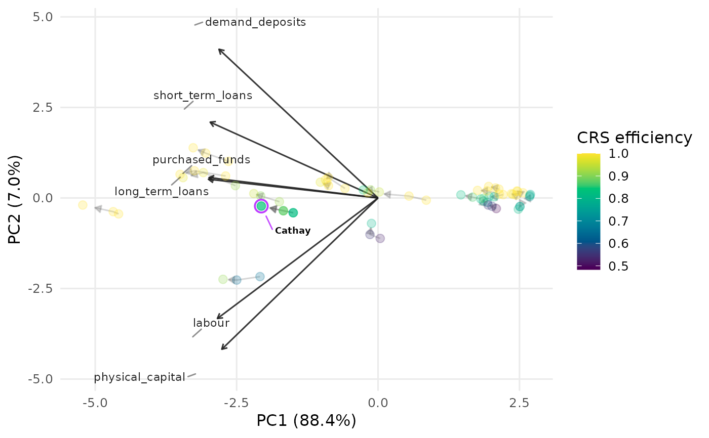
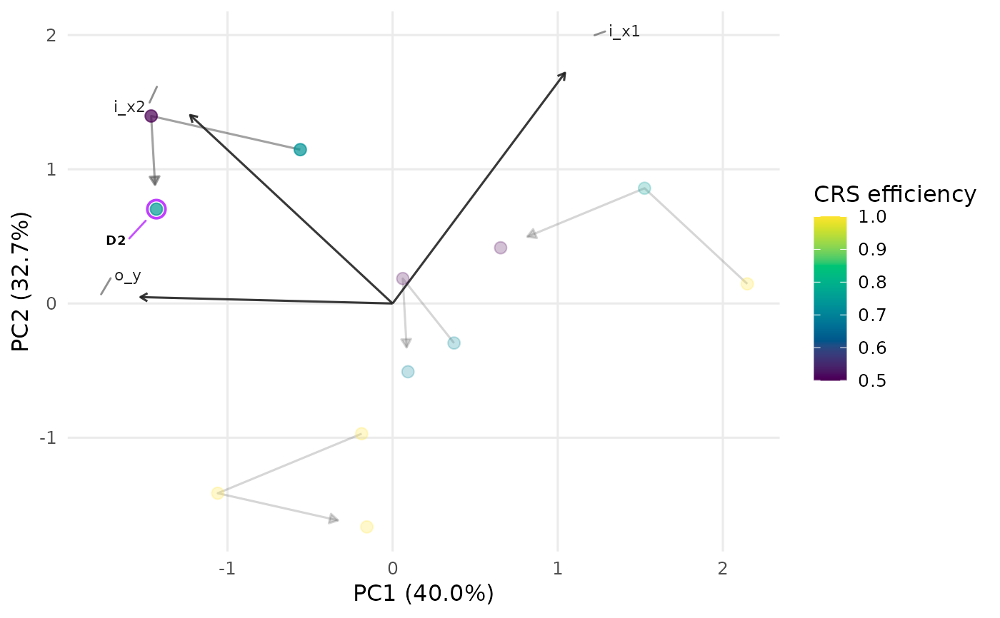

For panel (long-format) DEA data, computes a single principal-component embedding of the pooled, standardised inputs and outputs (so the axes and loading vectors are fixed), then draws each DMU's path through time as a connected trajectory. Points are coloured by a DEA efficiency score and the arrow on each trajectory points from the earliest to the latest period.
Usage
plot_panel_io_biplot(
panel_data,
inputs = NULL,
outputs = NULL,
id = "Label",
period = "Period",
color = c("crs", "vrs"),
orientation = "in",
vector_size = 1,
transparency = 0.7,
fade = TRUE,
labels = "none",
max.overlaps.value = 10,
period_labels = FALSE,
size_by_efficiency = FALSE,
subtitle = NULL,
title = NULL,
interactive = FALSE,
...
)Arguments
- panel_data
A data frame in long format (one row per DMU-period), or a
dea_panel_dataobject – in which caseinputs,outputs,idandperiodare taken from the object and those arguments are ignored.- inputs, outputs
Optional input/output column selectors, given either as character names or as integer column positions (e.g.
inputs = 3:5). IfNULL(default), columns are recognised by thei_ando_prefixes, as indea_data.- id, period
The identifier and period columns, given as a name or an integer position (default
"Label"and"Period").- color
Efficiency model for point colour, computed per period:
"crs"(default) or"vrs".- orientation
Measurement orientation for the efficiency scores.
- vector_size
Positive multiplier scaling the loading vectors.
- transparency
Point opacity. Either a single number in
[0, 1](constant alpha, default0.7) or the string"efficiency", in which case point alpha is mapped to the efficiency score (more efficient DMUs drawn more opaque).- fade
Controls the single-DMU focus view. When one DMU is given to
labels, all other marks (and, for the network plots, everything outside that DMU's sub-network; for the panel biplot, the other trajectories) are faded so the chosen DMU stands out.TRUE(default) uses a sensible fade level;FALSEdisables it; a single number in[0, 1]sets the alpha of the faded marks directly, where larger values fade them less (e.g.0.4leaves them more visible).- labels
Which DMU trajectories to label at their latest period. One of
"none"(default, no labels),"all"(label every DMU, with ggrepelmax.overlaps = Inf),"max.overlaps"(label with ggrepel usingmax.overlaps.value), or the name/id of a single DMU to highlight just that one. Use"id"to print each DMU's row number inside its own marker.- max.overlaps.value
Passed to ggrepel when
labels = "max.overlaps"(default10); larger values keep more crowded labels.- period_labels
Logical; if
TRUEeach point is labelled with its period. DefaultFALSE.- size_by_efficiency
Logical; if
TRUEpoint size grows with the efficiency score. DefaultFALSE.- subtitle
Optional subtitle shown beneath the title.
- title
Optional plot title.
- interactive
Logical; static ggplot2 (default) or interactive plotly.
- ...
Additional arguments passed to
geom_point.
Examples
# Real multi-period example: 22 Taiwanese banks over 2009-2011.
# Columns can be given by position (inputs are columns 3-5, outputs 6-8) ...
pd <- dea_panel_data(taiwanese_banks, inputs = 3:5, outputs = 6:8,
id = "DMU", period = "Year")
plot_panel_io_biplot(pd, labels = "Cathay")
 plot_panel_io_biplot(
taiwanese_banks, id = "DMU", period = "Year",
inputs = 3:5, outputs = 6:8, labels = "Cathay"
)
plot_panel_io_biplot(
taiwanese_banks, id = "DMU", period = "Year",
inputs = 3:5, outputs = 6:8, labels = "Cathay"
)

# ... or by name, with the loading vectors and a single bank's trajectory.
plot_panel_io_biplot(
taiwanese_banks, id = "DMU", period = "Year",
inputs = c("labour", "physical_capital", "purchased_funds"),
outputs = c("demand_deposits", "short_term_loans", "long_term_loans"),
transparency = "efficiency", labels = "all"
)
 # A toy long-format frame using the i_/o_ prefix convention also works.
panel <- data.frame(
Label = rep(paste0("D", 1:4), each = 3),
Period = rep(2019:2021, times = 4),
i_x1 = c(4,5,5, 7,6,6, 8,8,7, 4,3,4),
i_x2 = c(3,3,2, 3,4,3, 1,2,2, 2,2,1),
o_y = c(5,6,7, 8,8,9, 6,6,7, 7,8,8)
)
plot_panel_io_biplot(panel, labels = "D2") # highlight a single DMU
# A toy long-format frame using the i_/o_ prefix convention also works.
panel <- data.frame(
Label = rep(paste0("D", 1:4), each = 3),
Period = rep(2019:2021, times = 4),
i_x1 = c(4,5,5, 7,6,6, 8,8,7, 4,3,4),
i_x2 = c(3,3,2, 3,4,3, 1,2,2, 2,2,1),
o_y = c(5,6,7, 8,8,9, 6,6,7, 7,8,8)
)
plot_panel_io_biplot(panel, labels = "D2") # highlight a single DMU
